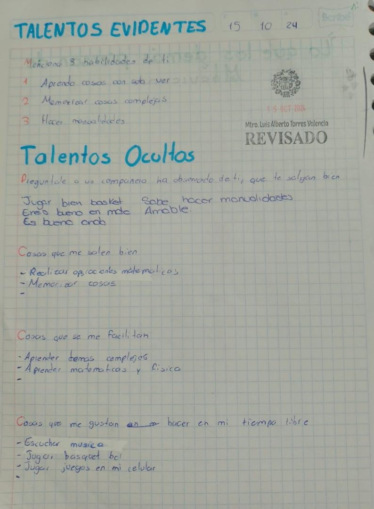
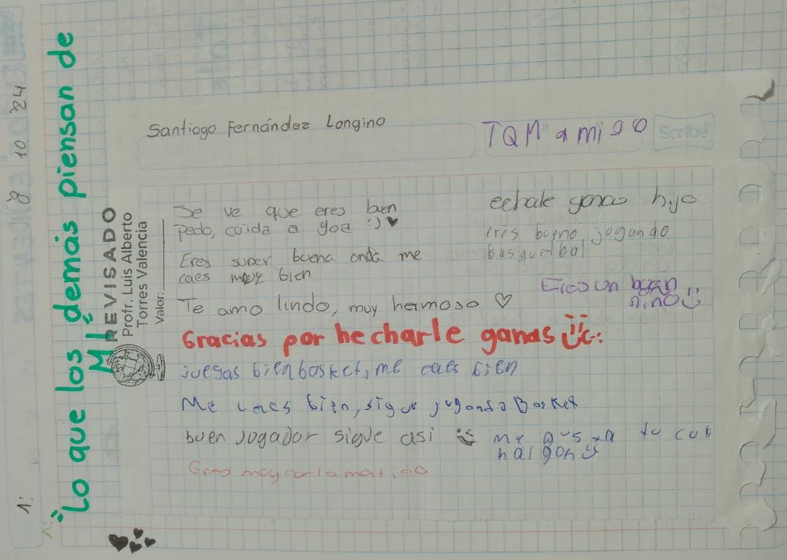

Recursos Socioemocionales
Plan de vida
Un plan de vida es una guía personal que orienta nuestras decisiones y acciones hacia la construcción del futuro que deseamos. No es un documento rígido, sino una brújula que nos ayuda a mantener el rumbo en medio de los cambios y desafíos de la vida.
✨ Elementos principales de un plan de vida
Autoconocimiento
Reconocer quién eres, cuáles son tus valores, talentos, intereses y limitaciones. Sin esta base, es difícil definir metas realistas y significativas.
Propósito
Identificar aquello que da sentido a tu existencia: puede ser contribuir a tu comunidad, desarrollarte profesionalmente, cuidar de tu familia o crecer espiritualmente.
Metas y objetivos
Establecer metas claras a corto, mediano y largo plazo. Por ejemplo: terminar una carrera, aprender un idioma, ahorrar para un proyecto, o mejorar tu salud.
Acciones concretas
Definir pasos específicos que te acerquen a tus metas. No basta con soñar: se requiere disciplina y constancia.
Flexibilidad
La vida cambia, y tu plan debe adaptarse. Revisar y ajustar periódicamente tus objetivos es parte del proceso.
🌍 Importancia del plan de vida
Te da dirección y claridad en momentos de incertidumbre.
Te ayuda a priorizar lo que realmente importa.
Favorece la motivación y el compromiso personal.
Permite evaluar tus avances y celebrar tus logros.
Talentos evidentes
El tema central es autoconocimiento y reflexión personal sobre talentos y habilidades. La página está organizada en secciones donde identificas: Habilidades propias (aprender observando, memorizar cosas complejas, hacer manualidades). Talentos ocultos (lo que otros observan en ti: jugar básquet, ser bueno en matemáticas, amable). Cosas que se te facilitan (aprender temas complejos, matemáticas y física). Actividades que disfrutas en tu tiempo libre (música, básquetbol, juegos en celular). 👉 Es una dinámica de autoexploración, que mezcla lo que tú reconoces de ti mismo con lo que los demás perciben, para construir una visión más completa de tus capacidades.

Lo que piensan de mí
El tema es percepción social y retroalimentación positiva entre compañeros. Dinámica: Se trata de una actividad escolar donde tus compañeros escriben comentarios sobre ti en una hoja. El título “¡Lo que los demás piensan de mí!” marca la intención: recopilar opiniones externas. Cada persona aporta frases cortas, generalmente positivas, sobre tu personalidad, habilidades o apariencia (ejemplo: “Eres muy carismático”, “Juegas bien basket”, “Me gusta tu cabello”). El profesor revisa la actividad y valida que se haya cumplido. 👉 La dinámica busca que los estudiantes reciban retroalimentación social, refuercen su autoestima y reconozcan cómo son vistos por los demás. Es un ejercicio de valoración colectiva que complementa el autoconocimiento.
